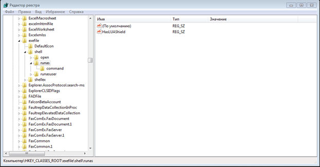

Лабораторная #6 по ОС
- Введение
- Как работать
- Выполнение
- Остальные параметры
- Работа через консоль
- Контрольные вопросы
- Ссылки
Лабораторная работа №6 - Работа с реестром в Windows.
Цель работы: Получить представление о работе с реестром Windows.Введение
Что такое реестр в Windows?
Согласно докуметации с сайта Microsoft это - Иерархическая централизованная база данных, используемая в ОС Microsoft Windows 98, Windows CE, Windows NT и Windows 2000 для хранения сведений, необходимых для настройки операционной системы для работы с пользователями, программными продуктами и устройствами.
В реестре хранятся данные, которые необходимы для правильного функционирования Windows. К ним относятся профили всех пользователей, сведения об установленном программном обеспечении и типах документов, которые могут быть созданы каждой программой, информация о свойствах папок и значках приложений, а также установленном оборудовании и используемых портах.
Системный реестр заменяет собой большинство текстовых INI-файлов, которые использовались в Windows 3.x, а также файлы конфигурации MS-DOS, такие как Autoexec.bat и Config.sys. Версии реестра для разных версий операционных систем семейства Windows имеют определенные различия.
Так же есть такое понятие как Куст реестра - это группа разделов, подразделов и параметров реестра с набором вспомогательных файлов, содержащих резервные копии этих данных. Вспомогательные файлы для всех кустов за исключением HKEY_CURRENT_USER хранятся в системах Windows NT 4.0, Windows 2000, Windows XP, Windows Server 2003 и Windows Vista в папке %SystemRoot%\System32\Config. Вспомогательные файлы для куста HKEY_CURRENT_USER хранятся в папке %SystemRoot%\Profiles\Имя_пользователя. Расширения имен файлов в этих папках указывают на тип содержащихся в них данных. Отсутствие расширения также иногда может указывать на тип содержащихся в файле данных.
Так же имейте в виду, что при работе с реестром большая часть внесенных изменений применяется сразу.
Разделы реестра
Сам по себе реестр структурирован и содержит следующие разделы:
- HKEY_CURRENT_USER - Данный раздел является корневым для данных конфигурации пользователя, вошедшего в систему в настоящий момент. Здесь хранятся папки пользователя, цвета экрана и параметры панели управления. Эти сведения сопоставлены с профилем пользователя. Вместо полного имени раздела иногда используется аббревиатура HKCU.
- HKEY_USERS - Данный раздел содержит все активные загруженные профили пользователей компьютера. Раздел HKEY_CURRENT_USER является подразделом раздела HKEY_USERS. Вместо полного имени раздела иногда используется аббревиатура HKU.
- HKEY_LOCAL_MACHINE - Раздел содержит параметры конфигурации, относящиеся к данному компьютеру (для всех пользователей). Вместо полного имени раздела иногда используется аббревиатура HKLM.
- HKEY_CLASSES_ROOT - Является подразделом HKEY_LOCAL_MACHINE\Software. Хранящиеся здесь сведения обеспечивают выполнение необходимой программы при открытии файла с использованием проводника. Вместо полного имени раздела иногда используется аббревиатура HKCR. Начиная с Windows 2000, эти сведения хранятся как в HKEY_LOCAL_MACHINE, так и в HKEY_CURRENT_USER. Раздел HKEY_LOCAL_MACHINE\Software\Classes содержит параметры по умолчанию, которые относятся ко всем пользователям локального компьютера.
- HKEY_CURRENT_CONFIG - Данный раздел содержит сведения о профиле оборудования, используемом локальным компьютером при запуске системы.
Типы параметров
Поскольку реестр Windows представляет собой сложную логическую модель базы данных, вся сохраняемая информация, которая располагается в специальных информационных контейнерах (проще говоря - параметрах), должна быть классифицирована. Классификация для хранения в параметрах значений происходит по типу данных, представляющих это значение. Всего таких типов одиннадцать.
Что обычно хранится в подобных параметрах
- REG_BINARY - Необработанные двоичные данные. Большинство сведений об аппаратных компонентах хранится в виде двоичных данных и выводится в редакторе реестра в шестнадцатеричном формате.
- REG_DWORD - Данные представлены в виде значения, длина которого составляет 4 байта (32-разрядное целое). Этот тип данных используется для хранения параметров драйверов устройств и служб. Значение отображается в окне редактора реестра в двоичном, шестнадцатеричном или десятичном формате.
- REG_EXPAND_SZ - Строка данных переменной длины. Этот тип данных включает переменные, обрабатываемые при использовании данных программой или службой.
- REG_MULTI_SZ - Многострочный текст. Этот тип, как правило, имеют списки и другие записи в формате, удобном для чтения. Записи разделяются пробелами, запятыми или другими символами.
- REG_SZ - Просто текстовая строка переменной длинны
- REG_RESOURCE_LIST - Последовательность вложенных друг в друга массивов
- REG_NONE - Данные, не имеющие определенного типа. Такие данные записываются в реестр системой или приложением. В окне редактора реестра отображаются в виде двоичного параметра в шестнадцатеричном формате.
- REG_LINK - Символическая ссылка
- REG_QWORD - Данные, представленные в виде 64-разрядного целого. Начиная с Windows 2000, такие данные отображаются в окне редактора реестра в виде двоичного параметра.
Где эти параметры посмотреть? Например, вот, на данном скриншоте указаны параметры (наверно для какой то игрушки) все они представляют из себя текстовые строки.
Или вот например содержимое параметра REG_BINARY, то есть просто двоичные данные.
Как работать
В процессе загрузки система получает монопольный доступ к данным файлам и, поэтому, стандартными средствами работы с файлами вы ничего с ними сделать не сможете (открыть для просмотра, скопировать, удалить, переименовать). Для работы с содержимым системного реестра используется специальное программное обеспечение - редакторы реестра (REGEDIT.EXE, REGEDT32.EXE), являющиеся стандартными компонентами операционной системы. Для запуска реестра используется "Пуск" "Выполнить" - regedit.exe. Выглядит все это вот так:

Структруа окна довольно проста, в левой его части древовидное структура реестра, справой его части, параметры. Так же имейте в виду, что возможности конкретного пользователя при редактировании данных реестра определяются его правами в системе.
В процессе загрузки и функционирования операционной системы выполняется постоянное обращение к данным реестра как для чтения, так и для записи. Даже один неверный параметр в реестре может привести к краху системы, как и нарушение целостности отдельных файлов. Поэтому, прежде чем экспериментировать с реестром, позаботьтесь о возможности его сохранения и восстановления.
Выполнение
Если вдруг в конце нужного пути, будет не хватать папки, то досоздадите, что требуется.
Первое что вы сделаетеы будет бекапом реестра, для это нужно в меню сверху выбрать Файл->Экспорт и сохранить файл куда-нибудь. Потом их этого сохранённого файла можно будет откатить рееcтр к тому моменту пока вы его не сломали. Так же там можно выбирать не весь реестр, а только его отдельную ветку.
Второе что вы будете делать это изменять параметры реестра таким образом, чтобы изменить пункты меню в контекстном меню Windows.
Для этого нужно:
- Сначала надо перейти в /HKEY_CLASSES_ROOT/exefile/shell/rusas 
- Двойным щелчком щёлкаете по первому параметру(который «По умолчанию») и изменяете его на что пожелаете
- Можете добавить иконку, для этого требуется создать новый строковый параметр и написать в него путь до изображения (желательно чтобы картинка была в ICO и размером в 16x16 px)
- Вот такое контекстное меню получилось у меня.
Третье что требуется сделать это добавить новую кнопку в контекстное меню. В данном случае мы добавим кнопку которая удаляет содержимого папки без удаления самой папки Т.е. вам не придется открывать папку, выделять все файлы и нажимать на клавишу Delete, достаточно будет выбрать команду "Удалить содержимое папки".
Чтобы это сделать надо:
- Добавляем в раздел HKEY_CLASSES_ROOT\Directory\shell подраздел DeleteFolderContent и в его параметре по умолчанию прописываем текст для названия контекстного меню
- Далее в разделе DeleteFolderContent создаем подраздел command и в значении параметра по умолчанию прописываем строчку:
- Все готово и можете пользоваться примером и удалять содержимое папок.
cmd /c "cd /d %1 && del /s /f /q *.*" :: данная строка вызывает cmd с параметрами
Четвертое что от вас требуется это заблокировать диспетчер задач
- С помощью реестра можно разблокировать или заблокировать диспетчер задач. Откройте regedit и перейдите к «HKEY_CURRENT_USER\Software\Microsoft\Windows\CurrentVersion\Policies\». Если в левой части, ниже «Policies», Вы не обнаружите директорию «System» щелкните правой кнопкой мыши по «Policies» и выберите пункт «Создать», а потом «Раздел». Чуть ниже появится новая папка, которую вам надо переименовать в «System».
- Далее, в окне с параметрами (это справа), тыкните правой кнопкой мышки, выберите Создать -> Параметр DWORD и задайте ему имя DisableTaskMgr.
- Тыкните по нему правой кнопкой мыши и выберите пункт «Изменить». В строке ввода значения поставьте 1 для выключения (или 0 для включения) диспетчера задач
- А затем установите переключатель «Система исчисления» на «Десятичная». После этого, при попытке вызова диспетчера задач будет появляться «Диспетчер задач отключён администратором» (или наоборот это сообщение исчезнет, если он был заблокирован).
Пятое, что от вас потребуется сделать это попробовать ограничить доступ пользователя к ресурсам, а именно просто убрать логические диски. Параметры в разделе HKEY_CURRENT_USER относятся к текущему пользователю системы. Параметры в разделе HKEY_LOCAL_MACHINE - ко всем пользователям.
Будем работать с текущим пользователем, для этого открываем раздел реестра: HKEY_CURRENT_USER\ Software\ Microsoft\ Windows\ CurrentVersion\ Policies\ Explorer и добавляем в него параметр NoDrives типа DWORD. Вот так:
 Для каждого диска имеется собственное числовое значение. Приведу значения для разных букв разделов в десятичном счислении (потому как с ними проще оперировать в дальнейшем). Вот пример значений для параметра: A(буква диска)-1(значение),B-2,C-4,D-8,E-16,F-32,G-64 и так далее. И вот так это все выглядит в итоге.
Для каждого диска имеется собственное числовое значение. Приведу значения для разных букв разделов в десятичном счислении (потому как с ними проще оперировать в дальнейшем). Вот пример значений для параметра: A(буква диска)-1(значение),B-2,C-4,D-8,E-16,F-32,G-64 и так далее. И вот так это все выглядит в итоге.
Добавлю, что скрытые таким образом диски не видны только для Explorerа, а в других программах могут быть доступны (в файловых менеджерах, например). Но другие программы ведь можно и скрыть или запретить - о чем дальше.
Конкретно эти изменения отобразятся только после перезагрузки компьютера.
Шестое, что вы сделаете, это поработаете с автозагрузкой, для этого перейдите в HKEY_LOCAL_MACHINE\SOFTWARE\Microsoft\Windows\CurrentVersion\Run, там находятся программы, запускаемые при входе в систему. Создайте строковый параметр и назовите его Video, и в значении укажите путь до какого-либо видео. Так же вы можете назвать ваш параметр pucture и указать путь до картинки и любые другие вариации.

Седьмое, что вам потребуется сделать, это заблокировать контекстное меню, для этого идём HKCU\Software\Microsoft\Windows\CurrentVersion\Policles\Explorer и Создаём параметр NoViewContextMenu и придаём ему значение 1.
Остальные параметры
Далее будут просто перечислены возможные параметры реестра, которые можно изменить и тем самым ограничив доступ пользователя к ресурсам, можете попробовать с ними поиграться.
Читаются они следующим образом - ИмяПараметра=ТипПараметра:значение
Следующие параметры относятся к разделу реестра HKEY_CURRENT_USER\Software\Microsoft\Windows\CurrentVersion\Policies\Network
- NoNetSetup=dword:00000001 отключает доступ к значку "Сеть" в Панели управления
- NoFileSharingControl=dword:00000001 скрывает диалоговое окно управления совместным использованием файлов и принтеров, не позволяя пользователям управлять созданием новых совместных файлов или принтеров
- NoNetSetupIDPage=dword:00000001 скрывает вкладку "Идентификация"
- NoNetSetupSecurityPage=dword:00000001 скрывает вкладку "Управление доступом"
- NoEntireNetwork=dword:00000001 скрывает элемент "Вся сеть" в Сетевом окружении
- NoWorkgroupContents=dword:00000001 скрывает всё содержание Рабочей группы в Сетевом окружении
Следующие параметры относятся к ограничениям для всех пользователей Поскольку используется раздел HKEY_LOCAL_MACHINE, а не HKEY_CURRENT_USER. Для редактирования данных нужно обладать правами администратора системы HKEY_LOCAL_MACHINE\SOFTWARE\Microsoft\Windows\CurrentVersion\policies\System
- NoSecCPL =dword:00000001 отключает доступ к значку "Пароли" в Панели управления
- NoAdminPage=dword:00000001 скрывает вкладку "Удаленное управление"
- NoProfilePage =dword:00000001 скрывает вкладку "Профили пользователей"
- NoPwdPage"=dword:00000001 скрывает вкладку "Смена паролей"
- NoDispCPL=dword:00000001 отключает доступ к значку "Экран" в Панели управления
- NoDispAppearancePage=dword:00000001 скрывает "Оформление" в окне свойств экрана
- NoDispBackgroundPage=dword:00000001 скрывает "Фон" в окне свойств экрана
- NoDispScrSavPage скрывает "Заставка" в окне свойств экрана
- NoDispSettingsPage=dword:00000001 скрывает "Настройка" в окне свойств экрана
Некоторые из перечисленных запретов на действия пользователя используют не только системные администраторы, но и внедрившиеся в систему вирусы. Обычно выполняется запись в реестр данных, блокирующих возможность поиска и удаления внедрившегося вредоносного программного обеспечения и, в качестве завершающего аккорда - запрет на запуск редактора реестра (DisableRegistryTools). Как следствие, даже обладая правами администратора, пользователь не имеет возможности что-либо сделать со своим собственным реестром.
Работа через консоль
Так же с реестром можно работать через консоль Windows посредством утилиты REG, это может быть полезно, когда доступ к программе RegEdit невозможен.
Синтаксис команды REG выглядит следующим образом:
REG <процедура> [список параметров]
Для получения справки по данной команде используйте REG /?
Данная команда умеет выполнять одиннадцать различных действий с реестром: QUERY, ADD, DELETE, COPY, SAVE, LOAD, UNLOAD, RESTORE, COMPARE, EXPORT, IMPORT, каждая из этих процедур имеет собственный набор параметров. Попробуем применить несколько из них.
Сначала попробуем сделать резервную копию ветки реестра через консоль синтаксис прост:
REG SAVE <имя_раздела> <имя_файла> REG RESTORE <имя_раздела> <имя_файла>
Так же для просмотра реестра есть QUERY, её синтаксис:
REG QUERY Раздел [/v Параметр | /ve] [/s]
Со списком параметров можно ознакомиться в справке Windows, то есть по команде - reg query /?
Контрольные вопросы
- Что такое реестр и что с помощью него можно сделать?
- Как работать с реестром через консоль Windows? Какие для этого существуют команды.
- Как сделать резервную копию реестра?